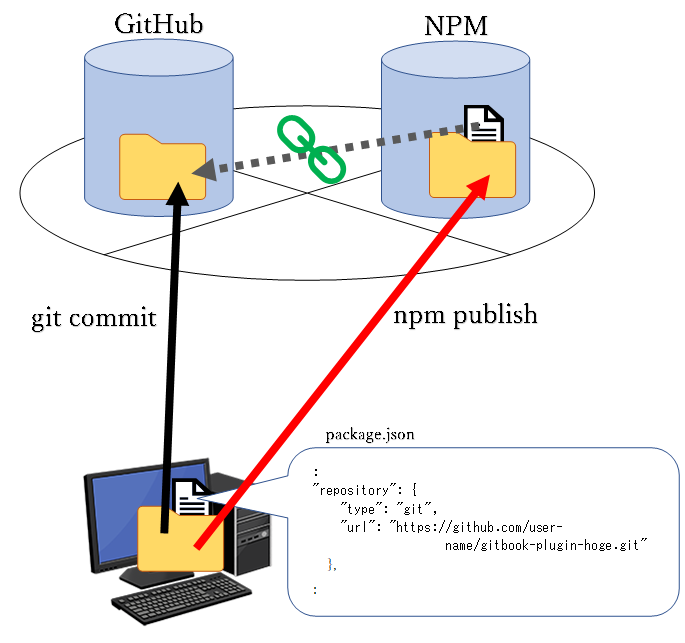

付録1．ノードモジュールの作成・登録
本章では、GitBookブラグイン（ノードモジュール）のGitBookテーマの作成手順について記述する。
本手順では、GitHubを介した登録手順としているが、いろいろな手順が存在するので一例として記述するものである。
- githubに登録用リポジトリを用意する。（Private属性でもOK）
- NPMリポジトリ（プロジェクト）内の
package.jsonファイルにgithub登録するURLを記述する。 - git commit、npm publishを実行する。
- NPM側で、
package.jsonファイル内容に従い、該当するgithubリポジトリにリンクする。

NPMモジュールプロジェクト初期化
コマンドプロンプトで以下のコマンドを実行し、NPMモジュールプロジェクトを作成する。
https://www.npmjs.com/ にて、プロジェクト名が使われていない事を事前に確認しておくこと。
> mkdir gitbook-plugin-hoge ← プロジェクト フォルダの作成
> cd gitbook-plugin-hoge ← カレント移動
> npm init ← プロジェクト初期化（コマンド実行後、適宜情報入力する）
処理終了後、前項に従い、バージョンが正しく表示されることを確認する。
NPMモジュールの作成
適宜NPMモジュールを作成する。
以下コマンドで、NPMに公開されているモジュールをダウンロードしサンプルとして流用することも可能。
> npm install [param]
作成方法の詳細については省略。
GitHubへのコミット
作成したプロジェクトをGitHubへCommitする。
Commit前にソースコードなど公開したくないファイル、ディレクトリ等を.gitignoreに定義しておくこと。
NPMモジュールの公開
> npm publish
－以上－